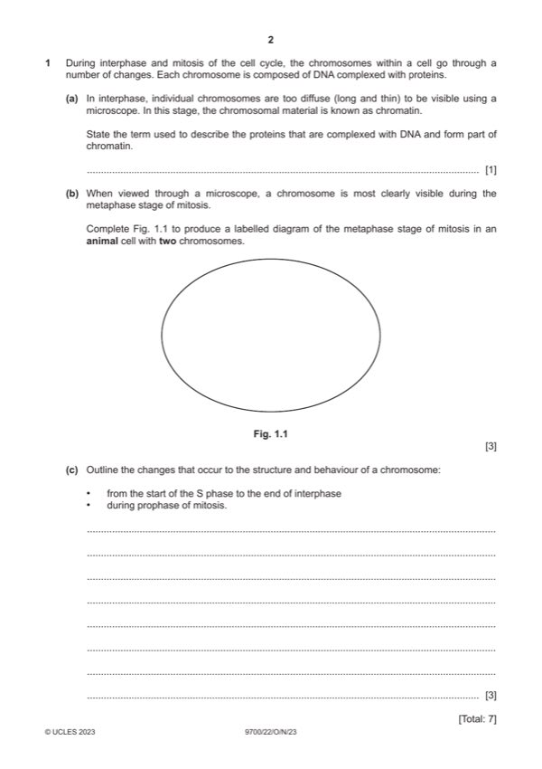

Question 1

Original paper page 2
Part 1(a) — solution
histones ; A basic / histone, proteins 1
Mark points
- Include the ideas shown in the solution above.
Part 1(b) — solution
max 2 if the spindle / centrioles extend outside the cell 3
Mark points
- Include the ideas shown in the solution above.
Part 1 — solution
two chromosomes, each with two chromatids, drawn approximately along central equator area ;
R if drawn as a, bivalent / homologous pair (close together or further apart)
A if equator is drawn across wider diameter
Mark points
- Include the ideas shown in the solution above.
Part 1(c) — solution
assume sequential interphase to prophase if not named 3
any three from:
interphase max 2
(chromosomal) DNA replicates ; A DNA synthesis
I chromatin
R if stated as in, G1 / G2
(each new molecule of) DNA, complexes / associates / AW, with, histones / proteins ;
sister / identical, chromatids form, qualified ; e.g. after (DNA) replication /during / end of, S phase
must be clear they are formed before prophase
prophase max 2
chromatids / chromosome, condense ; R if also in prophase
A become(s) shorter and fatter
A coiling / supercoiling, in context of, DNA / chromosomes / chromatids
R chromosomes condense to form chromatin
becomes visible / appears, as two (sister / identical) chromatids ; I composed of two chromatids
becomes attached to the spindle fibres ;
(spindle) microtubules attach to centromere / kinetochore formation ;
2023 Page 9 of 25
9700/22 Cambridge International AS & A Level – Mark Scheme October/November 2023
Mark points
- Include the ideas shown in the solution above.
Part 1 — solution
- [A22] and K12, active / remove stains, at a wide range of temperature
- [A22] is 20.5 / 21 °C or K12 is 22 °C
- [A22] / K12 ;
Mark points
- [A22] and K12, active / remove stains, at a wide range of temperature
- [A22] is 20.5 / 21 °C or K12 is 22 °C
- [A22] / K12 ;
Part 1 — solution
smooth endoplasmic reticulum labelled on Fig. 3.2 and detail ;
e.g. for, lipid / triglyceride / cholesterol, synthesis
tubular appearance / no ribosomes
Mark points
- Include the ideas shown in the solution above.
Part 1 — solution
blood arriving, is deoxygenated / has low(er) partial pressure of oxygen
A low, concentrations / levels, of oxygen or oxygen-poor
or
blood arriving has, high(er) partial pressure / AW, of carbon dioxide ;
A carbon dioxide-rich
Mark points
- Include the ideas shown in the solution above.
Part 1 — solution
membrane / carrier / transport, protein (move phospholipids across into lamellar body) ;
R channel protein / cotransporter (protein)
Mark points
- Include the ideas shown in the solution above.
Part 1 — solution
introns, are non-coding / do not code for amino acids / are not involved in polypeptide synthesis ;
R introns are triplets / codons, that are non-coding
I exons are coding
Mark points
- Include the ideas shown in the solution above.
Part 1 — solution
loss of / damage to, elastic fibres (and smooth muscle) from tunica media ;
A scar tissue replaces, elastic fibres / smooth muscle, in tunica media
A middle layer for tunica media
Mark points
- Include the ideas shown in the solution above.
Part 1 — solution
(lignified wall / lignin) prevents, (inward) collapse / compression / AW (from tensions created) ; R bursting
Mark points
- Include the ideas shown in the solution above.